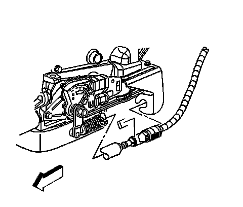

Automatic Transmission Range Selector Lever Cable Bracket Replacement
Automatic Transmission Range Selector Lever Cable Bracket Replacement
Removal Procedure

1. Apply the park brake.
2. Shift the transmission into neutral.
3. Raise and suitably support the vehicle. Refer to Lifting and Jacking the Vehicle.
4. Remove the retainer that secures the cable to the bracket.
5. Depress the tangs and remove the cable from the bracket.

6. Remove the bolts (1) securing the transmission range selector cable bracket (2) to the transmission.
7. Remove the transmission range selector cable bracket.
Installation Procedure
1. Install the transmission range selector cable bracket.
Notice: Refer to Fastener Notice.
2. Install the transmission range selector cable bracket bolts (1).
Tighten the bolts to 25 N.m (18 lb ft).
3. Align and install the cable to the bracket.
4. Install the retainer that secures the cable to the bracket.
5. Lower the vehicle.
6. Check the vehicle for proper operation. If cable adjustment is necessary, refer to Range Selector Lever Cable Adjustment.